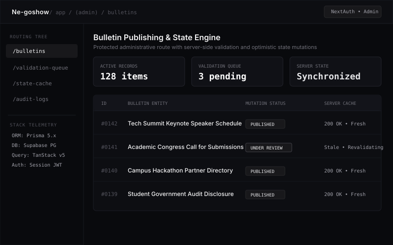
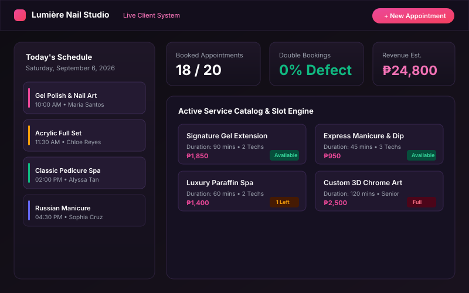
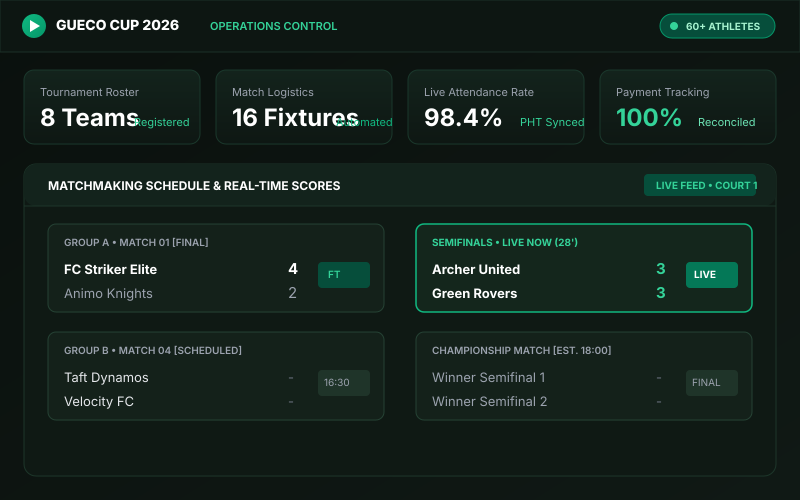

HI
I'M PETE
Information Systems Student & Full-Stack Systems Developer
About Me
Pursuing a Bachelor of Science in Information Systems at De La Salle University, I specialize in designing efficient digital infrastructure, business process modeling, relational database architectures, and automated management systems. Beyond software engineering, my background as Internals Director at DLSU Futsal & Football Club and a PFF-certified grassroots coach instills cross-functional team leadership, operational discipline, and execution into every system I architect.
Skills & Core Competencies
Featured Projects
Ne-goshow
Full-stack administrative platform for bulletin publishing and validation workflows with real-time server state management and protected administrative routing.

Nail Salon Management System
Production-ready appointment scheduling, service catalog, and customer reservation platform engineered to eliminate double-bookings and digitize salon operations.
Live Demo
Hair Salon Inventory System
Centralized stock and product lifecycle management system designed to monitor salon supplies, prevent stock discrepancies, and automate reorder alerts.
Github Repository
Green Property Exchange
Desktop simulation platform implementing the Model-View-Controller (MVC) pattern for managing eco-accommodations, featuring an algorithmic dynamic pricing engine and interactive 30-day booking calendar.
Github Repository
Gueco Cup 2026 Operations & Digital System
Engineered the digital registration, matchmaking dashboard, and live master attendance/payment trackers for a university-wide futsal tournament serving 60+ athletes.

Resume & Experience
Information Technology Intern
Knowles Training Institute [Remote]
Oversee cross-functional IT operations, domain maintenance, system health monitoring, and technical reporting for operational uptime. Administer digital onboarding/offboarding workflows, daily performance tracking, and automated attendance (DTR) reconciliation.
Co-Founder & Software Developer
StackForm (Independent / Client Projects) [Manila, PH]
Engineered custom web-based inventory and management solutions, digitizing legacy manual workflows for local business clients. Built asset-tracking systems managing over ₱100,000+ in retail inventory to improve client valuation accuracy and restock efficiency.
Industry Committee Head - Relations Officer
Google Developer Groups on Campus, DLSU [Manila, PH]
Led a 20+ member committee to expand corporate reach, securing key industry partnerships and keynote speakers for developer events. Coordinated targeted acquisition workflows to build long-term tech associations supporting campus hackathons.
Batch Auditor [CATCH2T28]
University Student Government (CATCH2T28) [Manila, PH]
Directed financial review protocols, auditing and compliance tracking to ensure transparency and accountability in student government accounts.
Leadership & Athletic Execution
De La Salle Futsal & Football Club
Internals Director (May 2026 – Present) & Internals Officer (Oct 2025 – May 2026)
Direct internal operations, player engagement, and weekly sports training logistics for 240+ club members across both futsal and football programs.
Philippine Football Federation (PFF)
Certified Grassroots Coach (PYCC, 2023)
Certified youth coach with practical experience running grassroots development clinics and junior player training, translating sports discipline and tactical preparation into operational execution.
Let's build something exceptional.
Open for collaboration, freelance opportunities, and technical roles. Let's discuss your next project.
Get In Touch